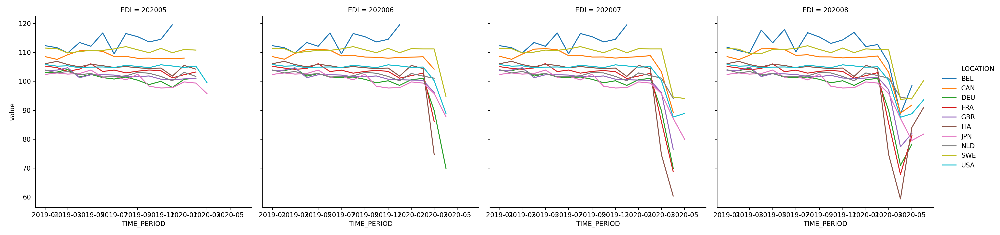

Get macro panel data from OECD.org via API
Hi. There are several ways to collect macroeconomic data, but collecting data for each country can be a challenge. However, you can automate the tedious process of collecting data from the OECD via API. Today, I will introduce the method.
1.OECD.Stat Web API
OECD.org offers a service called OECD.Stat, which provides a variety of economic data for OECD and certain non-member countries. You can also download the csv data manually by going to the website. However, you only need to use Python or R to do this since OECD provides a web API.
Below is a list of implementation details for specific OECD REST SDMX interfaces at this time.
-
Only anonymous queries are supported and there is no authentication.
-
Each response is limited to 1,000,000 observations.
-
The maximum length of the request URL is 1000 characters.
-
Cross-origin requests are supported in the
CORSheader (see here for more information aboutCORS). -
Errors are not returned in the results, but HTTP status codes and messages are set according to the Web Service Guidelines.
-
If a nonexistent dataset is requested,
401 Unauthorizedis returned. -
The source (or Agency ID) parameter of the
RESTquery is required, but theALLkeyword is supported. -
Versioning is not supported: the latest implementation version is always used.
-
Sorting of data is not supported.
-
The
lastNObservationsparameter is not supported. -
Even when
dimensionAtObservation=AllDimensionsis used, the observations follow a chronological (or import-specific) order. -
Searching for reference metadata is not supported at this time.
2.pandasdmx
The Web API is provided in the form of sdmx-json. There is a useful package for using it in Python, which is called pandasdmx. Here’s how to download the data.
- Import
pandasdmx, passOECDtoRequestmethod as an argument and createapi.Requestobject. - Pass the query condition to the data method of the
api.Requestobject, and download the data ofsdmx-jsonformat from OECD.org. - Format the downloaded data into a
pandasdata frame with the methodto_pandas().
3.implementation
Let’s do this in practice. What we’ll get is the Revisions Analysis Dataset -- Infra-annual Economic Indicators. We have access to all data, including revisions to the Monthly Ecnomic Indicator (MEI), one of the OECD datasets, so we can check key economic variables 1 from preliminary data at initial release to revised, finalized data. The dataset provides a snapshot of major economic indicators, at monthly intervals beginning in February 1999, that were previously available. In other words, the dataset allows us to build predictive models based on the data available at each point in time. The most recent data is useful, but it is preliminary and therefore subject to uncertainty. The problem is that this situation cannot be replicated when backtesting, and the analysis is often done under a better environment than the actual operation. This is the so-called Jagged Edge problem. I think this dataset is very useful because it can reproduce the actual operation situation. This time, you will get the following data items.
| Indicators | Statistical ID | Frequency |
|---|---|---|
| Gross Domestic Product | 101 | Quarterly |
| Index of Industrial Production | 201 | Monthly |
| Retail Trade Volume | 202 | Monthly |
| Monetary Aggregates | 601 | Monthly |
| International Trade in Goods | 702+703 | Monthly |
| Balance of Payments | 701 | Quarterly |
| Employment | 502 | Monthly |
| Harmonised Unemployment Rates | 501 | Monthly |
| Hourly Earnings in Manufacturing | 503 | Monthly |
| Early Estimates of Unit Labor Cost | 504 | Quarterly |
| Production of Construction | 203 | Monthly |
First, we define the functions. The arguments are database ID, other IDs (country IDs and statistical IDs), data acquisition start point and end point.
import pandasdmx as sdmx
## C:\Users\aashi\ANACON~1\lib\site-packages\pandasdmx\remote.py:13: RuntimeWarning: optional dependency requests_cache is not installed; cache options to Session() have no effect
## RuntimeWarning,
oecd = sdmx.Request('OECD')
def resp_OECD(dsname,dimensions,start,end):
dim_args = ['+'.join(d) for d in dimensions]
dim_str = '.'.join(dim_args)
resp = oecd.data(resource_id=dsname, key=dim_str + "/all?startTime=" + start + "&endTime=" + end)
df = resp.to_pandas().reset_index()
return(df)
Specify the dimension from which the data will be obtained. Below, (1) country, (2) statistical items, (3) time of acquisition, and (4) frequency are specified with a tuple.
dimensions = (('USA','JPN','GBR','FRA','DEU','ITA','CAN','NLD','BEL','SWE','CHE'),('201','202','601','702','703','701','502','503','504','203'),("202001","202002","202003","202004","202005","202006","202007","202008"),("M","Q"))
Let’s execute the function.
result = resp_OECD('MEI_ARCHIVE',dimensions,'2019-Q1','2020-Q2')
result.count()
## LOCATION 8266
## VAR 8266
## EDI 8266
## FREQUENCY 8266
## TIME_PERIOD 8266
## value 8266
## dtype: int64
Let’s look at the first few cases of data.
result.head()
## LOCATION VAR EDI FREQUENCY TIME_PERIOD value
## 0 BEL 201 202001 M 2019-01 112.5
## 1 BEL 201 202001 M 2019-02 111.8
## 2 BEL 201 202001 M 2019-03 109.9
## 3 BEL 201 202001 M 2019-04 113.5
## 4 BEL 201 202001 M 2019-05 112.1
You can see that the data is stored in tidy form (long type). The most right value is stored as a value, and the other indexes are
- LOCATION - Country
- VAR - Items
- EDI - At the time of acquisition (in the case of MEI_ARCHIVE)
- FREQUENCY - Frequency (monthly, quarterly, etc.)
- TIME_PERIOD - Reference point for statistics
Therefore, the same `TIME_PERIOD` exists in rows with different EDIs. For example, above you can see the data for 2019-01~2019-05 available as of 2020/01 for the Belgian (BEL) Industrial Production Index (201). This is very much appreciated as it is provided in Long format, which is also easy to visualize and regress. Here’s a visualization of the industrial production index as it is updated.
import seaborn as sns
import matplotlib.pyplot as plt
import pandas as pd
result = result[result['FREQUENCY']=='M']
result['TIME_PERIOD'] = pd.to_datetime(result['TIME_PERIOD'],format='%Y-%m')
sns.relplot(data=result[lambda df: (df.VAR=='201') & (pd.to_numeric(df.EDI) > 202004)],x='TIME_PERIOD',y='value',hue='LOCATION',kind='line',col='EDI')

plt.show()

While we can see that the line graphs are depressed as the economic damage from the corona increases, there have been subtle but significant revisions to the historical values from preliminary to confirmed. We can also see that there is a lag in the release of statistical data by country. Belgium seems to be the slowest to release the data. When I have time, I would like to add a simple analysis of the forecasting model using this data.
4. Another matter…
I passed the Python 3 Engineer Certification Data Analysis exam. It was pretty easy, with only a 70% pass rate, but it was a good opportunity to revisit the basics of Python. I haven’t even had the opportunity to use Python or R, let alone data analysis, in the work I’m doing now, so I’m considering the possibility of a career change. In the meantime, I plan to get the following qualifications by the end of this year, and I’ll be looking for a post where I can use my skills without focusing on finance. Like a diet, I need to declare and push myself.
- G Test
- Oracle Database Master Silver SQL
- Linuc level 1
- Fundamental Information Technology Engineer Examination
- AWS Certified Solutions Architect - Associate
I will report on the status of my acceptance on my blog each time.
-
gross domestic product and its expenditure items, industrial production and construction output indices, balance of payments, composite leading indicators, consumer price index, retail turnover, unemployment rate, number of workers, hourly wages, money supply, trade statistics, etc. ↩︎